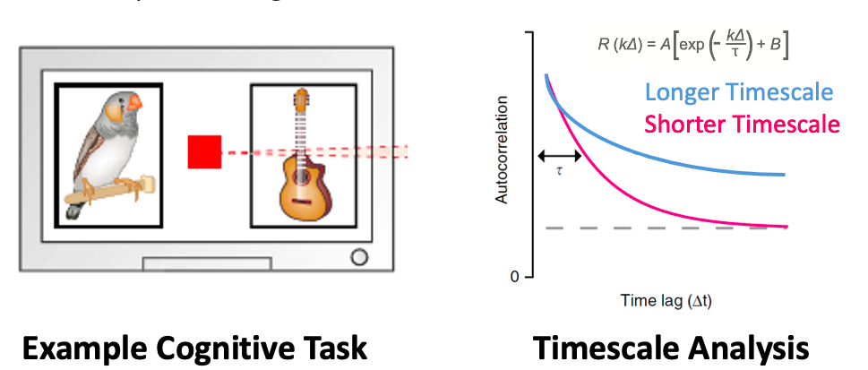
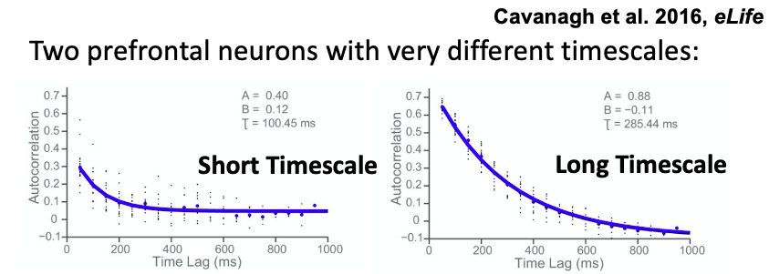
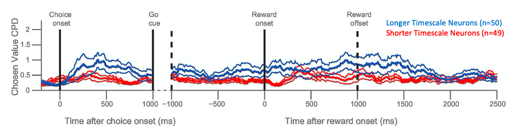
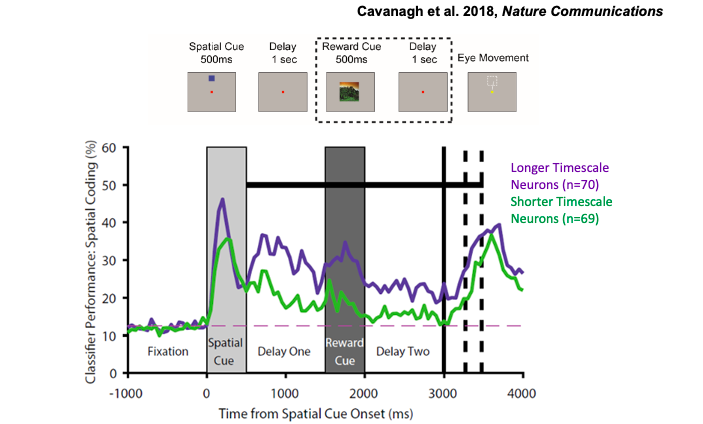

Neuronal Timescales Project
Complex behaviour requires our brains to process information across a range of timescales. For instance, in facilitating our comprehension of language, planning our movements, and even how we appreciate the beauty of music like Beethoven’s 9th symphony. For instance, to understand this text, your brain must combine information across a range of timescales: tens of millisecond (words), seconds (sentences), minutes (discourse). But do neurons have specific timescales over which they signal information?
Our work has contributed to the idea that neural processing occurs across a range of temporal scales. Short temporal windows facilitate adaptive responding in dynamic environments, while longer temporal windows promote the gradual integration of information across time. In the cognitive and motor domains, the brain sets overarching goals to be achieved within a long temporal window, which must be broken down into sequences of actions and precise movement control processed across much shorter temporal windows. However, we do not fully understand how these processes play out in the brain. To address this question, we performed a series of experiments:
The activity of single neurons in the prefrontal cortex was recorded while animals performed cognitive tasks. A neuronal timescale was calculated using the autocorrelation of a neuron's resting activity:

Our work demostrated that individual neurons, recorded in the same brain region, could have very different neuronal timescales:

Next, we showed that a neuron's timescale predicted the strength and duration of value signals during the cognitive task. This suggested that neuronal timescales were functionally relevant for decision-making!

In another study, we also demonstrated that a neuron’s timescale predicted the strength and duration of working memory activity:

To learn more about this work, please see the relevant publications:
Cavanagh, SE ., Hunt, LT., & Kennerley, SW. (2020). A diversity of intrinsic timescales underlie neural computations - Frontiers in Neural Circuits [Link]
Cavanagh, SE., Towers, JP., Wallis, JD., Hunt, LT. & Kennerley, SW. (2018). - Reconciling persistent and dynamic hypotheses of working memory coding in prefrontal cortex - Nature Communications [Link]
Cavanagh, SE., Wallis, JD., Kennerley, SW. & Hunt, LT. (2016) - Autocorrelation structure at rest predicts value correlates of single neurons during reward-guided choice - eLife [Link] [Code and Data]